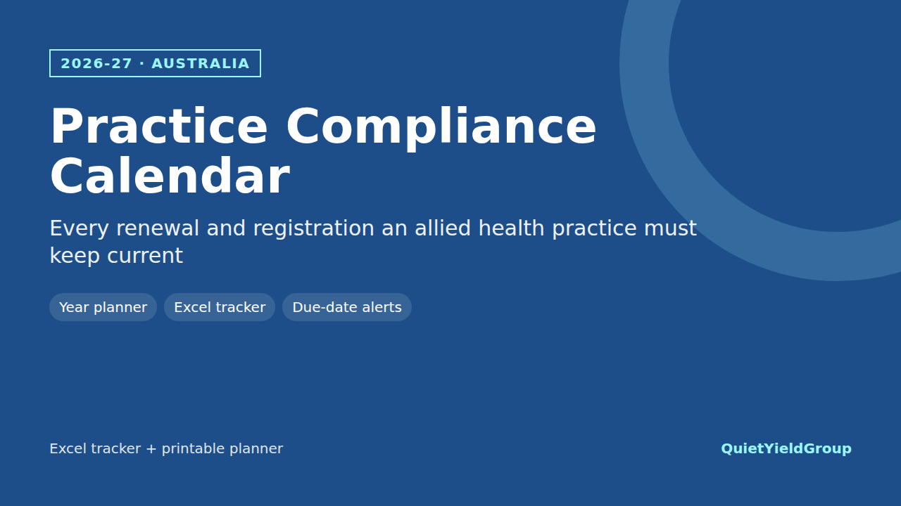

A printable year planner and spreadsheet tracker for the renewals, registrations and recurring dates a small allied health practice has to keep current.
A$12 · instant download
Ahpra renewal, indemnity insurance, CPD hours, HPOS delegations, BAS, Payday Super, NDIS re-registration, worker screening: a small allied health practice has dates spread across a dozen organisations, and missing one can mean a lapsed registration or claims that stop paying.
This calendar puts them in one place for July 2026 to June 2027. The printable planner gives you a one-page year at a glance with the fixed national dates (the 30 November Ahpra renewal and its late period, quarterly BAS, STP finalisation, the 10 December 2026 privacy policy change), a month-by-month checklist, and a table of what each obligation is, with the official page to check it on.
The spreadsheet tracker does the counting. Enter each practitioner's registration expiry, CPD hours, indemnity renewal and Medicare provider numbers, plus your practice's insurance, health fund, workers' compensation and NDIS dates. For each item it shows the next due date, days left and a status: overdue, due within 60 days, or OK.
Dates and rules are taken from Ahpra, Services Australia, the ATO, the NDIS Commission and other official pages as of 18 November 2026. Dates that depend on your practice are left for you to fill in, not guessed.
(Description: 197 words, counted by script.)
| File | What it is | |---|---| | Planner (PDF, 9 A4 pages) | Cover; how to use it, with a fill-in page for your practice's own dates; 2026-27 at a glance on one page; month-by-month checklist (3 pages) with space for your dates; what each obligation is and where to check it (2 pages); sources and disclaimer | | Tracker (Excel .xlsx, no macros) | Start here: settings and live counts of overdue, due soon and OK. Practitioners: 10 rows for profession, registration, CPD hours, indemnity, Medicare provider numbers, HPOS delegation. Practice: 23 obligations (business, insurance, funds, HICAPS, DVA, workers' comp, NDIS, privacy) plus 10 NDIS worker-screening rows. Calendar: next due date, days left and colour-coded status for every item | | Free preview | Cover and the year-at-a-glance page |
Saved in Microsoft Excel format (.xlsx). The formulas were tested with a spreadsheet calculation engine; the file has not yet been opened in Excel, Google Sheets or Apple Numbers.